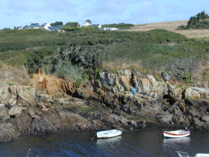

En allant vers Brigneau, Port Blanc
(Poulguen Per) était fermé
côté terre par une digue qui a
été détruite. C'est une ria et
un ruisselet y débouche.
Ce mini-port est tout près de
Trénez mais sa plage n'est pas
entretenue...dommage !

Le camping vu du sentier côtier
de l'autre côté de Port
Blanc. Les maisons de Kersolf ont une vue
imprenable sur l'océan... mais nous
aussi depuis notre caravane !